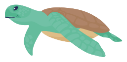
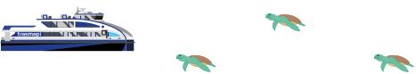
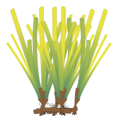
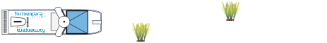
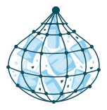
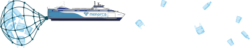
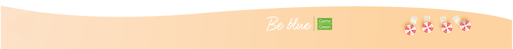

Bienvenido a la experiencia interactiva de Trasmapi
Sumérgete y ayuda al mar Mediterráneo.
Por favor, rota tu dispositivo a modo paisaje.

CONSERVACIÓN "TORTUGAS FELICES"

Con Trasmapi y su proyecto de Responsabilidad Social BE BLUE, podrás aportar tu granito en la ayuda para la conservación de esta especie declarada vulnerable a la extinción.
Tu preferencia de juego, y tu puntuación, nos indicarán dónde prefieres que se invierta más este mes: en conservación, investigación o educación.
La tortuga boba nace en la costa de Florida y, ayudada por las corrientes marinas, viaja hasta las aguas de Formentera donde crece hasta alcanzar su edad de reproducción, momento en que emprende el viaje de regreso.
Ayúdanos a que las tortugas puedan alcanzar su destino!

INVESTIGACIÓN "POSIDONIAS BAILANDO"

Con Formentera Lines y su proyecto de Responsabilidad Social BE BLUE, podrás aportar tu granito en la ayuda para la conservación de esta especie declarada vulnerable a la extinción.
Tu preferencia de juego, y tu puntuación, nos indicarán dónde prefieres que se invierta más este mes: en conservación, investigación o educación.
La Posidonia oceanica es una planta marina endémica del Mediterráneo, hoy en peligro y amenazada en su propio hábitat. Sortea las praderas de Posidonia y ayúdanos a preservarlas.

EDUCACIÓN "TRISTE BASURA MARINA"

Con Menorca Lines y su proyecto de Responsabilidad Social BE BLUE, podrás aportar tu granito en la ayuda para la conservación de esta especie declarada vulnerable a la extinción.
Tu preferencia de juego, y tu puntuación, nos indicarán dónde prefieres que se invierta más este mes: en conservación, investigación o educación.
Los plásticos no sólo contaminan las costas, sino que también afecta a toda la fauna marina. Los animales se enredan en ellos y confunden los fragmentos más pequeños con comida, lo que puede provocar su intoxicación y acabar con su vida.
Ayúdanos a recoger el máximo de residuos que flotan en nuestras aguas!

Pausado
Pausado
Pausado

SCORE:
0 de tortugas felices
RECORD: 0 de tortugas felices
Tu puntuación:
300
Ingresa tus iniciales:
TOP SCORE:
Jugador
Puntuación
SCORE:
0 de posidonias bailadoras
RECORD: de posidonias bailadoras
Por favor, rota tu dispositivo a modo paisaje.
Gracias por participar. Tu puntuación en este juego nos indicará donde donaremos nuestra aportación trimestral; investigación, conservación o educación.
Tu puntuación:
300
Ingresa tus iniciales:
TOP SCORE:
Jugador
Puntuación
SCORE:
0 de triste basura marina
RECORD: de triste basura marina
Vidas: 10
Gracias por participar. Tu puntuación en este juego nos indicará donde donaremos nuestra aportación trimestral; investigación, conservación o educación.

 Vidas:
Vidas: